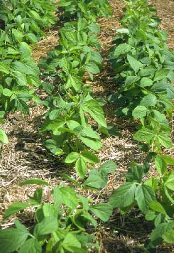

|
ECONOMICALLY
IMPORTANT PLANTS OF INDIA |
| Under-utilized Food and Fodder species and their wild relatives | Contributed by Ms.M.L Annapurna And Dr. Dhanapal, UAS, Bangalore |
Glycine max


Availability :
Status :
DIAGNOSTIC
FEATURES

An annual with erect or climbing
stem, reacing a height of 1.1/2-6 ft., densely clothed with hairs; leaves
trifoliate, ovate-lanceolate, long-petioled; flowers small, inconspicuous, borne
on short axillary racemes, white or purple to reddish purple, normally
self-pollinated; pods 1.1/2-2 in. long in clusters of 3-5, densely hairy, sub-trobulose,
containing 2-4 seeds; seeds elliptical with long hilum, compressed, yellow,
chocolate or black.
Breeding System :
Phenology :
Pollinators:
Seed Biology :
Cultivation : Major Pests and Diseases: Parts used:
It is cultivated on the hilly-tracts at an elevationof 6000ft.It is essentially
a sub-tropical plant.Its cultivation extends to tropical and temperate regions
up to 52 degree N, latitude.
Pests:Grass hoppers, hairy caterpillars,Bsceptica Swinh,Diacrista obliqua and
Aproaerema, stem borer beetle, a cerambycide bettle, groundnut surul and bugs.
Diseases:Wilt due to Fusarium sp., downy mildew caused by Peronospora
manshurica.,leaf spot due to Phyllosticta glycines.
Economic
Potential and Uses
Seeds.
Harvesting Practices
Early types of soybean mature in 75-110 days, while late ones take 100-200 days.
The crop is harvested when the leaves begin to fall off and the pods are just
ripe; if the pods are allowed to become too ripe,they burst open and considered
loss of seed results.The plants are cut, dried in the sun and seeds threshed out
as in teh case of other pulses.Crops raised for forage are harvested when the
pods are half mature.
The yield of seeds varies from 650 to 1000 lb.per acre; under favourable
conditions a yeild as high as 2,800 lb.per acre has been obtained.
Produce and Products
Oil, defatted flour,fullfat flour.
A series of products have been developed out
of soybean in India.
Soy milk,lassi,paneer,milk shakes and fabricated products
for example textured vegetable products ,meat analougues, and ,coffee
whitners.
Fermented products like tofu and tempe.
1. The wealth of India, A Dictionary of Indian Raw Materials and Industrial Products, Vol. I. A-By, Publications and Information Directorate, CSIR, New Delhi, India, 1948.pp.142.
2 www.heilpflanzen-suchmaschine.de/ sojabohne/so.